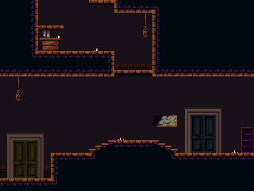
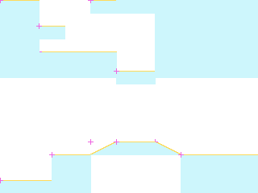
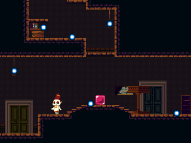

rmChurch15
ROOM_111_S002 · ROOM 111 · rectangle [0, 240, 320, 240]


Статическая реконструкция v4; не native gameplay screenshot. Голубой: маски; жёлтый: опоры; розовый: pivot.
Исходный OBJT sprite_index, кадр 0 — исследовательский кандидат

Не исполнены native Create/Step/Draw, shaders, FSM и динамические spawn paths.
Готовность
Статическая основа: ready. Полная native-сцена: blocked_native_audit. Игровая сборка: не создана.
Переработать только подтверждённые статические визуальные слои под будущую авторскую игру. Сохранить сетку, границы, читаемость опор и места стыков. Новые сюжет, сцены и рисунки ещё не утверждены.
Зависимости
Future art direction and target asset classifier · Native actor/spawner/state/VFX audit before complete scene handoff
Рабочая очередность предложена по связности. Исполнитель: художница; личность, сроки и новые рисунки не назначены.
Depth слои: 4, 3, 2, 0. Опоры и ограничения: точные ROOM transforms и отдельные авторские маски; соседство не переосмыслять.
Входы, выходы и соседи
Входы: E110_00, E112_01
Выходы: E111_00, E111_01
{"section": "ROOM_111_S001", "kind": "shared_image_boundary", "direction": "up", "physical_passage": "unknown; drawing boundary is not a door"}
{"section": "ROOM_112_S001", "room": 112, "edge": "E111_00", "kind": "authored_transition", "direction": "right", "conditions": "room-level gate evidence; not evaluated", "source_anomaly": null}
{"section": "ROOM_110_S002", "room": 110, "edge": "E111_01", "kind": "authored_transition", "direction": "left", "conditions": "room-level gate evidence; not evaluated", "source_anomaly": null}
Исходные условия и механизмы комнаты
[
{
"x": 208,
"y": 384,
"object": 25,
"instance_id": 102051,
"creation_code": -1,
"scale_x": 1.0,
"scale_y": 1.0,
"color": 4294967295,
"rotation": 0.0,
"source_room": 111,
"source_object": "SavePoint",
"author_depth": 2,
"derived": false,
"flags": [],
"kind": "rest",
"asset": "INTERACT_507",
"bell_asset": "INTERACT_520",
"bell_offset": [
14,
-17
],
"interaction_radius": 40
},
{
"x": 272,
"y": 144,
"object": 523,
"instance_id": 102073,
"creation_code": -1,
"scale_x": 1.0,
"scale_y": 1.0,
"color": 4294967295,
"rotation": 0.0,
"source_room": 111,
"source_object": "oDevLockedDoor",
"author_depth": -1,
"derived": false,
"flags": [
151
],
"kind": "gate",
"asset": "INTERACT_569",
"manual": true,
"interaction_radius": 28,
"prototype_policy": "Native inventory/story/map prerequisites required; W attempts only; source opened latch persists"
},
{
"x": 288,
"y": 144,
"object": 528,
"instance_id": 102074,
"creation_code": 3676,
"scale_x": 2.0,
"scale_y": 3.0,
"color": 4294967295,
"rotation": 0.0,
"source_room": 111,
"source_object": "oHeavenlyWarpToDev",
"author_depth": 0,
"derived": false,
"flags": [],
"kind": "warp",
"asset": "INTERACT_922",
"target_room": 9,
"target_position": [
64,
176
],
"source_creation_code": 3676
}
]Проверенные assetID
Кандидаты и блокеры
SPRT_439, SPRT_494, SPRT_507, SPRT_688
Полные авторские placements ↗ · Native-аудит ↗ · Очередь и возвраты ↗